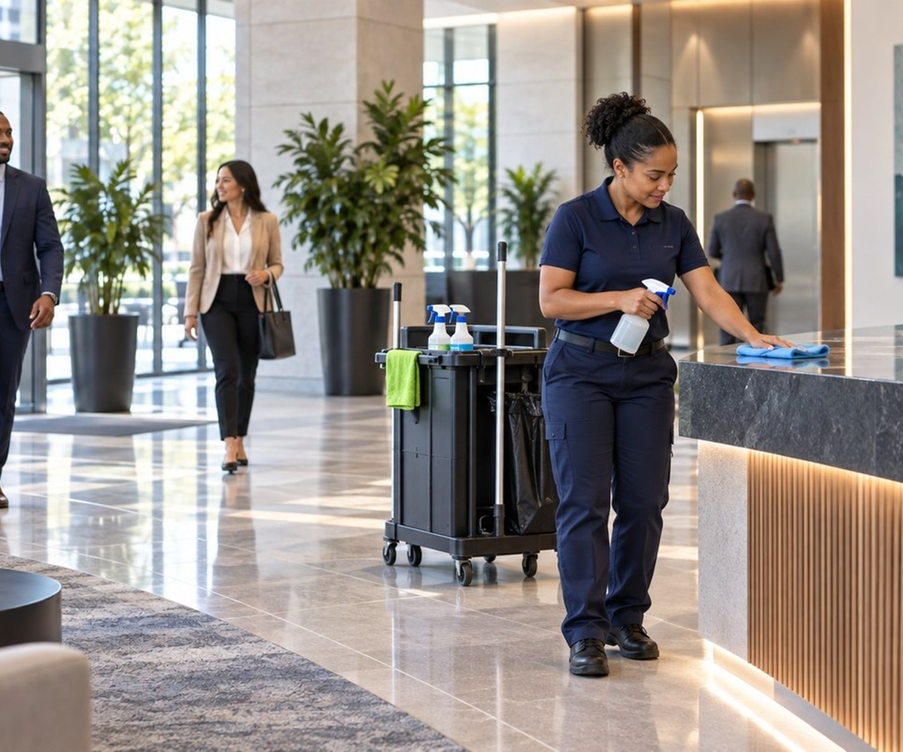

What Is Porter Service? Duties, Costs, and When It Makes Sense
A lobby can be cleaned before opening and still need attention by lunchtime. Porter service is designed for the hours in between—not as a replacement for every kind of janitorial work, but as ongoing care while a property is in use.

What exactly is porter service?
A porter is a cleaning and upkeep professional assigned to help keep a building’s shared spaces presentable and usable while people move through them. Instead of arriving once to complete a set of cleaning tasks and leave, a porter may make repeated rounds through the property during a scheduled shift. You may hear the terms day porter, night porter, or building porter. They describe when the work takes place, not a single universal checklist.
Consider an office lobby at 8 a.m. The floor is clean and the trash cans are empty. By noon, deliveries have arrived, people have used the restrooms, and the entrance has picked up dirt from outside. A porter handles the ordinary changes that occur between scheduled full cleanings. The exact duties depend on the property and what the service agreement includes.
What does a porter do during a shift?
Many porter assignments center on routine attention to high-use areas. Typical duties may include:
- Entrances and lobbies: checking for tracked-in dirt, picking up litter, spot-cleaning floors, and keeping reception areas orderly.
- Restrooms: checking soap, paper, and other supplies; wiping appropriate surfaces; and addressing messes as needed.
- Trash and recycling: emptying bins and moving collected waste to the designated disposal area according to the building’s procedures.
- Shared spaces: tidying breakrooms, waiting areas, elevators, stairwells, and other places employees or visitors use throughout the day.
- Minor spills and unexpected messes: responding when trained and equipped to do so, using suitable products and safe procedures.
- Communication: reporting damaged fixtures, recurring problem spots, empty supplies, or issues that require a maintenance professional.
Some buildings request interior glass touch-ups, exterior litter pickup, or event turnover. Others limit coverage to lobbies and restrooms. Porter service is not automatically plumbing, building repair, security, specialized biohazard response, or floor restoration. Those tasks need the right personnel, equipment, training, and separate agreement.
How is porter service different from regular janitorial cleaning?
Scheduled janitorial cleaning often focuses on a planned list of tasks at a set time: vacuuming or mopping larger areas, cleaning restrooms thoroughly, and completing work that is easier when the space is less occupied. Porter coverage emphasizes checks and quick attention throughout an operating period. Both can be useful, but they solve different timing problems.
A building might have a cleaning crew come in every evening and a porter make daytime rounds. Or a quieter workplace may do perfectly well with scheduled visits and no porter at all. The goal is to match the cleaning schedule to what actually happens inside the building, not to add staff simply because the option exists.
Day porter versus night porter: is the work different?
A day porter works while a property is active. The role often calls for discretion around meetings, customers, tenants, or patients, along with attention to entrances, restroom supplies, and frequent touchpoints. The schedule may concentrate on business hours or just the busiest part of the day.
A night porter may support an evening business, a late-shift facility, or a property with foot traffic after ordinary office hours. Depending on the site, night coverage may include common-area rounds, trash checks, and preparing spaces for the next shift. It is not necessarily identical to an overnight deep-cleaning crew. What matters is the written scope, not the title on the schedule.
What might a typical porter schedule look like?
For an occupied property, a practical shift might start with a quick walkthrough: check entrances, restrooms, supplies, and visible concerns. The porter then moves through agreed routes, spending more time in busy areas and returning to the same places as traffic increases. Before the end of the shift, there may be a final restroom and trash check and a handoff note for the next cleaning team.
That example is not a standard requirement. A medical waiting area, retail property, apartment community, and distribution building have different patterns of use and may have additional safety or sanitation rules. The appropriate number of rounds depends on occupancy, building layout, and the work the porter is trained and contracted to perform.
Why does ongoing coverage matter?
The value is less about making a building look spotless every minute and more about closing the gap between scheduled cleanings. Restroom supplies can run out unexpectedly. Rain can bring water into an entrance. A heavily used breakroom can need attention before the next cleaning visit. With a porter on site or scheduled during peak hours, those everyday issues may be addressed sooner.
Regular attention can also make conditions more comfortable for employees, tenants, and guests. For routine community facilities, the CDC recommends cleaning frequently touched surfaces regularly and other surfaces when visibly dirty. Cleaning and disinfecting are different procedures; more chemicals are not automatically better, and specialized settings can have different rules.
What determines the cost of porter service?
There is no single reliable price for every building. Costs typically vary with the number of coverage hours, shift timing, size and layout of the property, number of restrooms and shared areas, required tasks, local labor costs, supervision, insurance, equipment, and the level of training involved. Evening or weekend shifts and specialized work can change the quote.
Ask whether the proposal includes paper products, soap, cleaning chemicals, tools, trash liners, supplies storage, and replacement coverage when the assigned worker is absent. Two proposals can look very different even when they list the same number of hours because their included tasks and materials differ.
When might the added cost be worth considering?
Porter coverage can make practical sense when a property stays busy for many hours and the same issues keep recurring before the next scheduled cleaning. Frequent restroom resupply, food-area cleanup, overflowing shared trash, and visibly dirty entrances are examples of demand a property manager can actually observe.
On the other hand, a small office with light traffic, a straightforward layout, and reliable scheduled cleaning may not need a dedicated porter. A short, targeted mid-day visit could be more proportionate than a full shift. Porter coverage is an ongoing operating expense, and its value should be evaluated against real building use—not assumed to pay for itself or guarantee fewer complaints.
How can a property manager decide?
Start with a simple record of what needs attention during normal operating hours for a week or two. Note the time of day, the area, how often the issue happens, and who handles it now. The pattern may reveal whether a full shift, a few peak-hour visits, or a revised evening cleaning plan is appropriate.
Then compare proposals using the same written expectations: the areas covered, frequency of checks, hours on site, supplies included, response procedures, and who receives updates. If possible, review results after an initial service period and adjust the scope rather than treating the first schedule as permanent.
Questions worth asking before signing a service agreement
- Which tasks are included each visit or shift, and which are excluded?
- Is coverage continuous, limited to a certain window, or based on scheduled rounds?
- Who provides consumables and cleaning products?
- How are spills, unsafe conditions, and maintenance issues reported?
- What cleaning-chemical training and protective equipment are appropriate for the work?
- How does the provider handle an employee absence or schedule change?
- Can the scope be adjusted if building traffic is lighter or heavier than expected?
Workers should be trained for the products and tasks they use. OSHA provides guidance on cleaning-chemical hazards, product labels, safety data sheets, and protective practices. That safety planning is part of a responsible service arrangement, not an optional extra.
The practical takeaway
Porter service is ongoing attention to the small, visible, and sometimes urgent cleaning needs that arise while a building is occupied. It can be useful in high-traffic spaces, but it is not necessary for every property or a substitute for a well-planned cleaning program. The right choice depends on whether the building has enough recurring daytime or evening needs to justify the hours and scope being proposed.